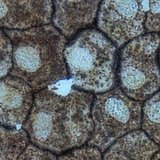
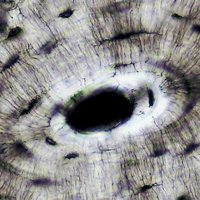

Echte foto's23 weefsels door de microscoopepitheel, bindweefsel, bloed, kraakbeen, spier · 40–400×✓ hierEchte foto's door de microscoop, van 40× tot 400×. Een weefsel is een groep cellen met dezelfde bouw en taak. Kies een weefsel, stel scherp en vergroot. Verkennen: tik op de genummerde markeringen. Opdrachten: voorspel, wijs zelf de onderdelen aan en verklaar.
Zeg wat je ziet met de vergroting erbij, bijvoorbeeld: "Bij 400× zie ik in elke cel een celkern."
Alle foto's: Berkshire Community College Bioscience Image Library, publiek domein (CC0). De vergroting is de vergroting van de microscoop waarmee de foto is gemaakt (objectief × oculair). De foto's zijn onbewerkt; alleen verkleind (1152 px hoog). Er staat geen meetlat bij: van deze foto's is het gezichtsveld niet bekend. Meten doe je in de getekende microscoop.